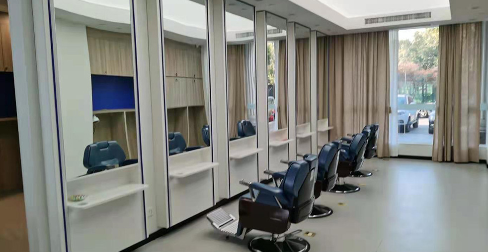

大麥植髮醫療集團是中國高端植髮服務行業的領導品牌。我們是中國微針植髮與無剃髮植髮的先驅與領導者。
連續五年，我們在中國一線城市的植髮手術量與掉髮治療量均位居第一。憑藉核心的植髮技術，我們已成為中國頭髮健康行業創新與發展的領導者。
全球直營診所
微針技術專利
年資深經驗
成功案例
為您獨特的掉髮需求量身訂製的完整解決方案
個人化髮際線設計與植髮，打造自然效果。
運用精準微針種植，為稀疏區域增加密度。
為頭頂與髮旋禿頭提供完整修復方案。
精準種植，打造自然眉毛。
藝術性種植，打造完美鬍子或鬍型。
修復或強化鬢角，展現更陽剛的外觀。
胸部、私密處等其他部位的體毛植髮。
針對各種類型掉髮問題的完整治療。
專業頭髮護理與保養療程，養成健康秀髮。
微針植髮又稱種植筆技術，透過將單個毛囊放入種植筆的空心尖端，然後直接將毛囊推入預先設計好的頭皮接受區。種植筆可360度旋轉，配合自然頭髮生長方向，大幅減少創傷與患者疼痛，同時避免二次毛囊損傷。
了解為什麼我們是全球植髮的信賴選擇
自2006年以來，便是微針植髮技術的先驅與領導者
遍布中國主要城市，均提供相同的高標準服務
創新的微針與種植筆技術，帶來卓越效果
受到全球患者信賴，帶來改變人生的效果
為國際患者提供全程英文支援
先進的設施與嚴格的安全規範，讓您安心
看看我們患者達成的驚人轉變


與滿意患者的珍貴時刻

成功手術後與醫療團隊合影

與醫生慶祝絕佳效果

又一位滿意患者分享喜悅

出院前與專家合影

治療後與陳醫生開心合影

開心的患者展示新樣貌
聽聽全球滿意患者的分享
"在Google搜尋「植髮推薦」找到大麥，他們的微針植髮技術太厲害了！效果非常自然，我的自信心終於回來了。大麥真是台灣植髮的好選擇！"
"香港植髮診所我比較了好多家，最後選了大麥。從諮詢到手術全程都很專業，醫師團隊很有經驗，真的很推薦給需要的朋友！"
"I came from the US to Shanghai for the surgery, and every step of the journey was worth it. The microneedle technology is incredible, and recovery was much faster than I expected!"
"在Bing上看到大麥植髮的評價很不錯，過來做了FUE植髮。價格合理，效果又好，毛囊存活率很高，真的是澳門植髮的優質選擇！"
"中國台灣植髮價格很貴，專程來到大麥做無剃髮植髮。360度種植筆做出來的髮際線超自然，朋友們都看不出我有植髮，太值得了！"
"18年經驗加上10萬多個成功案例，大麥植髮真的很有說服力。我的頭髮加密效果很自然，就連理髮師都看不出痕跡，太感謝了！"
體驗我們現代舒適的設施

我們先進的設施

在我們的尊貴休息室放鬆

無菌與先進

隱私與專業

舒適的術後空間

溫馨的入口
在中國主要城市找到我們的醫院
找到關於植髮的常見問題答案
點擊複製聯絡資訊
15810155700
+86 13730143529
hairtransplant@qq.com